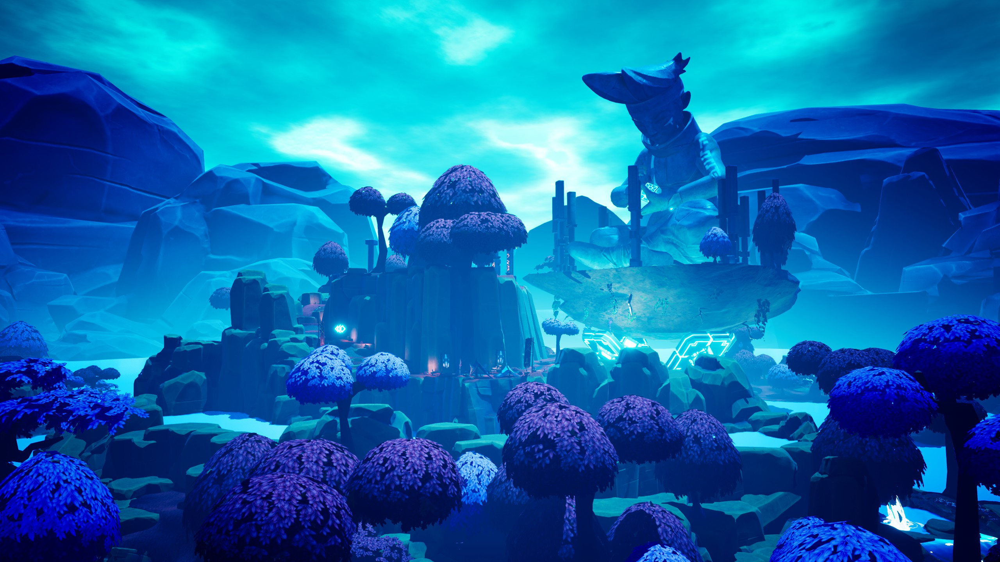
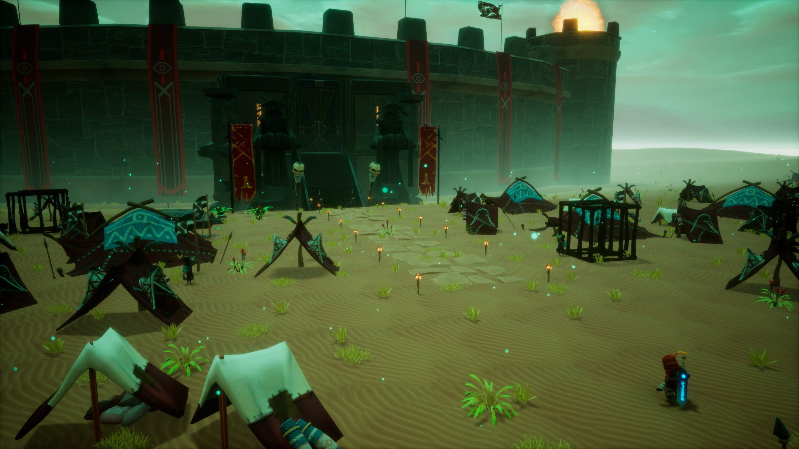
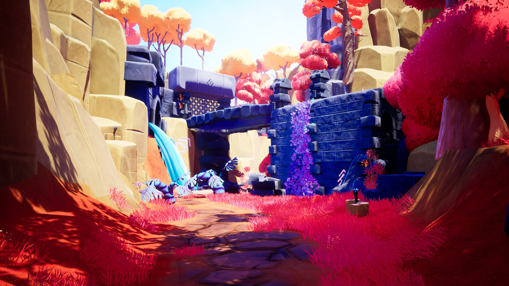
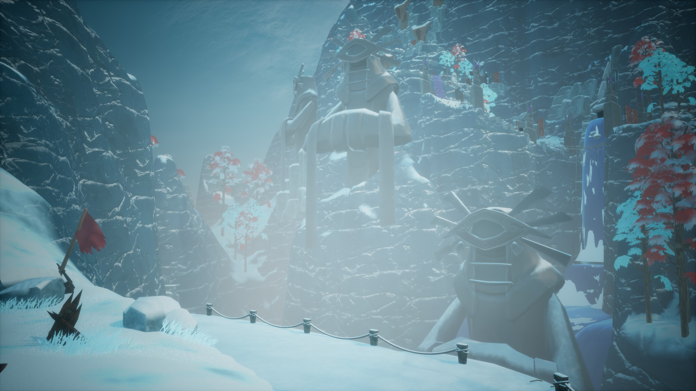
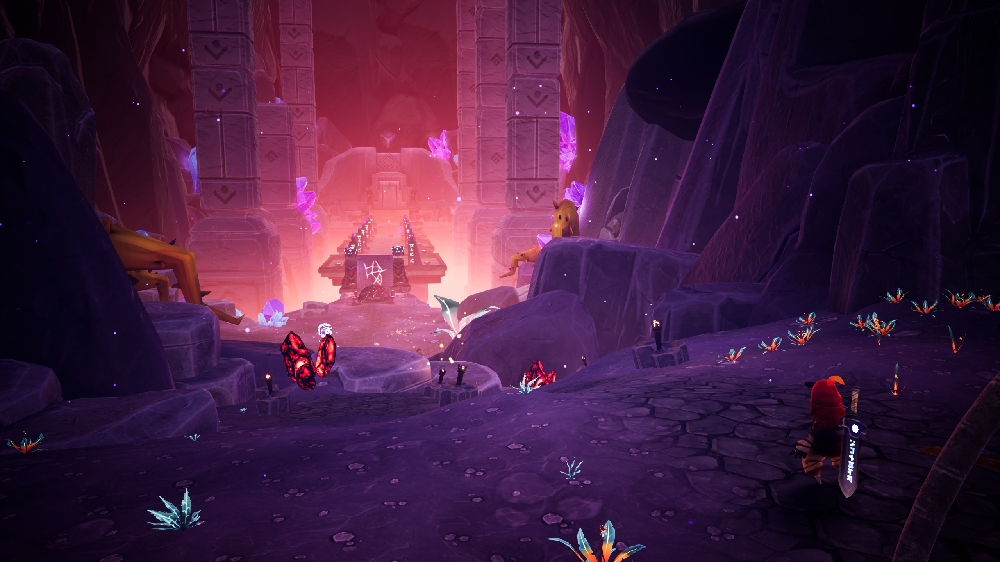
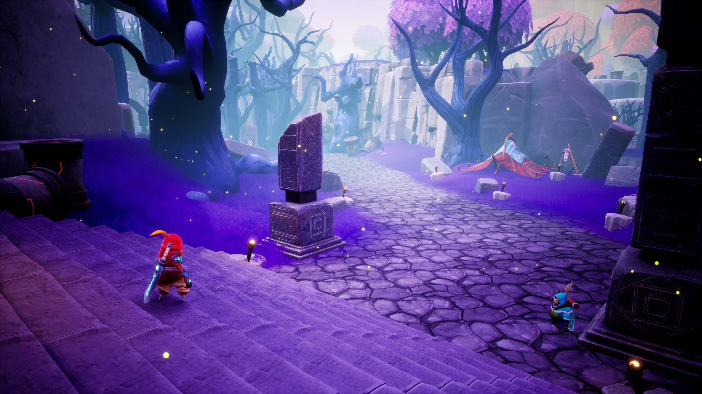

Project Overview

Astor: Blade of the Monolith is a 3D action RPG developed by C2 Game Studio and published by Versus Evil and tinyBuild. Set in a world of androids, ancient temples, and a looming threat named Haken, the game takes players through a series of distinct environments that blend combat, exploration, and light puzzle-solving.
As Lead Level Designer I was responsible for the design and implementation of 20+ levels across the full game, from early layout and flow design through encounter placement, environmental storytelling, and final polish. I also mentored and directed the designers who handled levels outside my direct scope, maintaining consistency across the full experience.
Below I break down four of the levels I'm most proud of: the opening temple that sets the tone, a vertical tower that recontextualizes everything the player has seen, and the final race to the source of all power on the planet.
My Role
Astor was a project nearly a decade in the making, but the level design team only existed during the final two to three years of production. When we arrived, some levels were being built from scratch: clean slates we could approach with full creative ownership. Others were inherited from earlier production phases and required deep intervention: evaluating what was worth keeping, what no longer aligned with the current design direction, and what needed to be rebuilt entirely. Counterintuitively, the inherited levels were often the harder challenge. Starting from zero meant we could account for every variable upfront. Adapting existing work meant navigating the tension between what was already there and what the game actually needed.
Temple of Psyche is a clear example of this. It was one of the first levels I worked on at C2, and when I inherited it, it had significant problems: confusing layout, mismatched metrics, poor player orientation. I rebuilt it into a level that was spatially clear, narratively grounded, and mechanically coherent without discarding what made the space interesting in the first place.
Production was organized around milestones of roughly three months. Each milestone, the team I led was responsible for bringing three to four levels to a playable, QA-ready state. Progress was tracked in Jira and version-controlled in Perforce. Internally, I ran weekly or bi-weekly playtesting sessions where the team played each other's work and gave structured feedback. We also held weekly sessions with an external consultancy of experienced developers brought in to provide direction, whose feedback carried significant weight in shaping our decisions.
The scope of work on each level was consistent across the team: validating and refining the spatial layout, populating it with encounters, rewards and challenges, placing NPCs, configuring dialogue, implementing quests, and setting up the Nav Orb, a navigation ability that guides the player to their current objective via navmesh. Getting the Nav Orb right was one of the more technically demanding parts of level design on this project, since it had to function correctly regardless of where in the level Astor activated it. Cinematic implementation was also part of our responsibilities: using a custom behaviour tree–based tool, we configured camera placement, character positioning, animations, and dialogue for all of the game's cutscenes. The animation assets were provided by the animation team, but the full cinematic choreography was assembled and implemented by level designers. The final stage of each milestone was an extended testing period: playing through completed levels repeatedly as art passes landed, catching anything that broke in the process.
Below is a breakdown of a selection of three of the levels I designed and implemented directly.
Temple of Chosen
Temple of Chosen is the game's opening level, short and direct by design. It opens with a cinematic introducing Astor and his companion Zan exploring ancient ruins together, setting a tone of mystery and discovery. When the level begins, Astor has no abilities. The design goal was to give the player the full core power set and teach them how to use it before the level ends.
The level is openly tutorial in nature, and that was a deliberate choice. The real design challenge was calibrating the right amount of gameplay: enough to introduce the mechanics properly, but tight enough that the level never overstays its welcome. Finding that balance took multiple iterations to get right.
Full walkthrough — Temple of Chosen
The Observatory
The Observatory is the most ambitious level in the game. It's an ancient tower stretching from the peak of the world's highest mountain to the stratosphere: a near-infinite vertical structure that Astor ascends floor by floor, discovering what each level holds. The core narrative premise is that this place retroactively explains everything: every biome, every ecosystem the player has traveled through was engineered here. The Observatory is the origin of the world's life, and that revelation recontextualizes every level that came before it.
The story is told through environmental holograms. As Astor moves through the tower, scenes from the past replay around him: the relationship between Haken and his creator Soren, who were once master and student. That relationship deteriorates as Astor ascends, the holograms growing darker until the culminating moment: Haken pushing Soren from the summit of the tower he built.
Mechanically, the level introduces the Awakening: an uncontrolled power surge that overtakes Astor at specific moments, making him dramatically stronger for a limited time. These bursts are tied directly to narrative beats, so the player's combat capability fluctuates with the emotional weight of what they're uncovering. The boss fight against the Ancient Demon is designed around this state. After defeating it, a badly wounded Astor reaches the top floor alone, where the Observatory's guiding spirit gives him control over his power. Soren's spirit is waiting there to reveal the truth of what happened.
The Observatory was also one of the most technically demanding levels to produce. Each floor was its own sub-level, assigned to a different designer and orchestrated by me. The elevator didn't move through space: it loaded and unloaded the corresponding sub-level as Astor progressed, which meant every designer had to coordinate their entry and exit points so the transitions made spatial sense. The logistics were significant. The Nav Orb also caused persistent problems here, since loading and unloading sub-levels repeatedly broke the navmesh in ways that were difficult to predict and required careful iteration to resolve.
Full walkthrough — The Observatory
The Monolith
The Monolith is the game's final level, and the Monolith itself is its organizing principle. The source of all power on the planet, it had to feel like a destination worthy of everything that came before it. The level was designed around it from the start: as Astor races through the canyon, the rock formations on either side are placed deliberately to reveal the Monolith in stages. It appears first at a distance, barely visible between the ridges. As the player advances it grows, the canyon walls gradually opening up until Astor is standing directly beneath it and its full scale is impossible to ignore. That reveal was the central design decision around which everything else was built.
The level is a frenetic chase: Haken pressing toward his goal while his best soldiers throw themselves at Astor to slow him down, forcing the player to fight through wave after wave of enemies while keeping pace. It's short and deliberately so. After everything the player has been through, the pacing here needed to feel like a sprint to the finish. The design goal was sustained intensity with no room to breathe, all the way to the Monolith's door.
Astor arrives too late. Haken enters the Monolith first and the door seals behind him, leaving Astor outside with no way in. It's a moment of genuine defeat after a full game of fighting. What follows is one of the level's most important beats: the Diokek, all of Astor's companions, arrive and perform a runic ritual together that forces the Monolith open one more time. It gives Astor a last farewell to everyone he's traveled with before stepping inside for the final confrontation with Haken.
Full walkthrough — The Monolith
Additional Levels
Beyond the three levels detailed above, Astor shipped with 20+ levels total. Several of these were designed and built in collaboration with other designers on the team, with me directing, mentoring, and reviewing the work throughout the production cycle, providing feedback on player flow, encounter pacing, and spatial composition.
A selection of shots from those levels is shown below as a sense of the full scope and visual variety of the game.






Final Thoughts
Shipping Astor: Blade of the Monolith was one of the most meaningful moments of my career. Seeing the game available on PC, PS4, PS5, Xbox Series X|S, and Nintendo Switch, platforms I'd grown up playing, made it real in a way that's hard to put into words. It was my first professional release, and I don't think anything quite prepares you for what it feels like to see something you built actually exist in the world.
What made it even more significant was the trust C2 placed in me. I had been working with the studio for only a couple of months when they gave me the Lead Level Designer role. That confidence shaped how I approached the project from day one. I wanted to earn it. Leading the team, coordinating with art and engineering, navigating the friction that comes naturally when disciplines intersect under pressure: all of it was demanding, and all of it made me a better designer and a better collaborator.
Astor was not a simple project. Nearly a decade of development history, a team finding its footing, and the constant challenge of aligning creative vision with technical reality. But that complexity is also what made working on it so formative. I'm deeply grateful to everyone at C2 who was part of it. This is a project I'll always carry with me.
Astor: Blade of the Monolith is available now on PC, PS5, Xbox Series X|S and Nintendo Switch.
Play Now on Steam